Home / Docs / Episode 4 · CIRCE
Production notes
Episode 4 · CIRCE
Book 10 re-cut around one line per scene, the place where power shifts: the Laestrygonians, Circe, and the order to sail to the house of Death. Watch the film.
Production notes · THE FOUND ODYSSEY · Episode 4 · CIRCE
Book 10 runs as one story: the Laestrygonians, Circe, and the order to sail to the house of Death. It lasts 6 min 30 s at -17 LUFS.
The experiment: the line
Here it is in order. Click a frame and the film plays from there.
This episode follows the direction "I don't need all of the lines, I need the line." Each scene was re-cut around one fulcrum line, the place where power shifts. The way each scene is made follows from that.
- Framing. Everything else plays wide. The camera goes in tight only for the line, and holds after it so the answer has room.
- Gesture. Each line gets one small held gesture, and the gesture carries the meaning instead of a caption.
- Sound. The score goes silent about two seconds before the line. One low note sounds after it.
- Writing. There are no ink notes in this episode and no labels in the frame. The act card names the sign, and the picture does the rest.

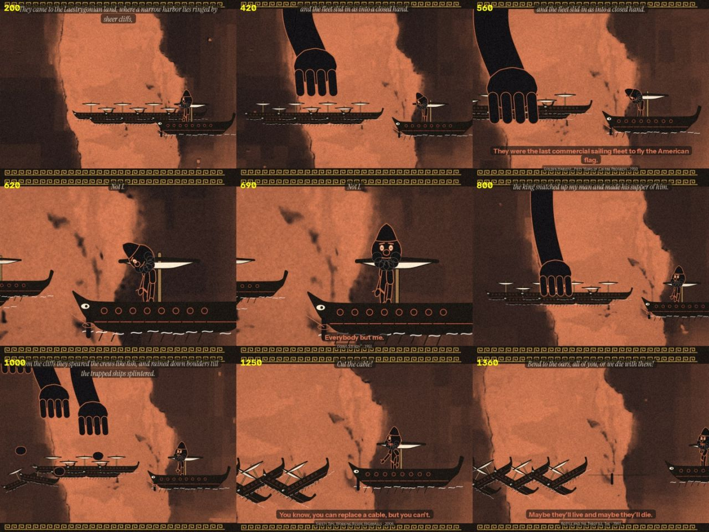
scene test The scene rendered on its own before the episode was assembled, to check staging, scale and the line.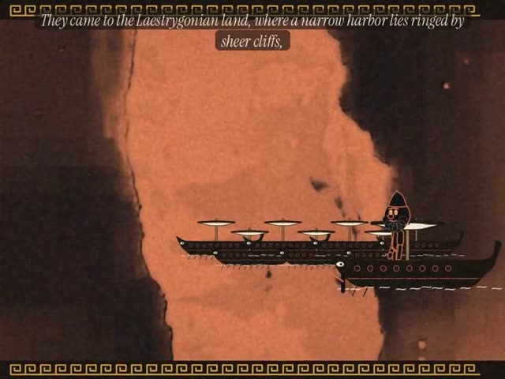
0:20 check frame from this scene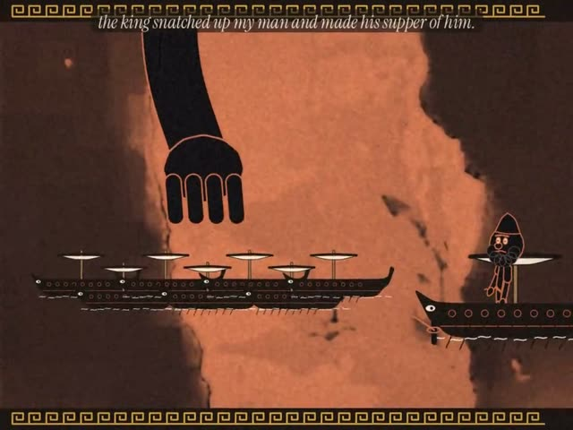
0:45 check frame from this scene- Part
- Cold open · the Laestrygonians
- The line
- "Not I."
- The gesture
- While the fleet sails into the closed harbour, he loops the rope once round a rock post outside it.
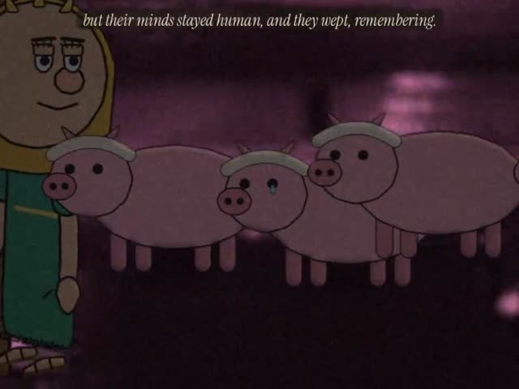
2:04 “they wept, remembering.”
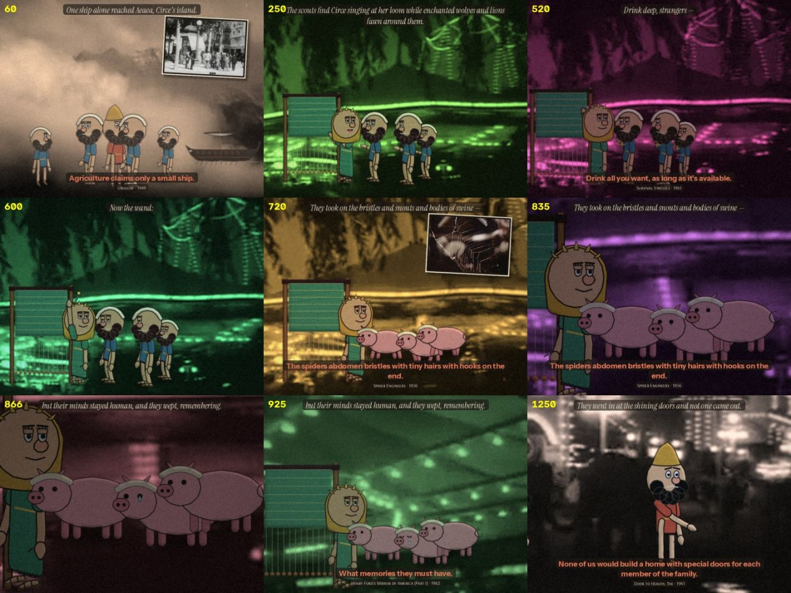
scene test The scene rendered on its own before the episode was assembled, to check staging, scale and the line.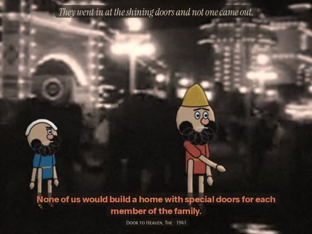
2:20 check frame from this scene- Part
- I · the sty
- Sign
- Rd 25, Rich dream
- The line
- "they wept, remembering."
- The gesture
- The dream's colour stops swimming. The frame holds on one pig while a single tear gathers and runs. Then it cuts straight to the doors outside. Eurylochus keeps looking back at them, and Odysseus's hand goes to his sword hilt.
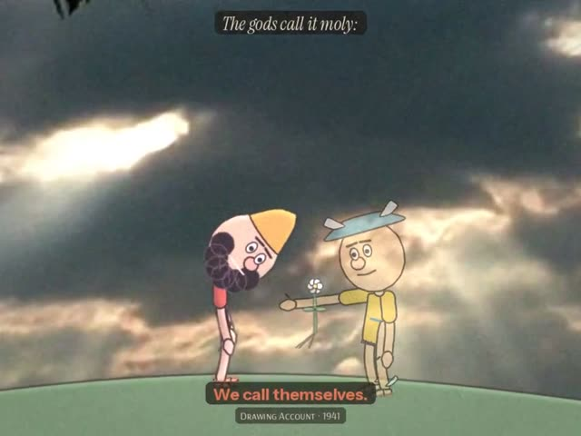
2:55 “black at the root, its flower white as milk.”
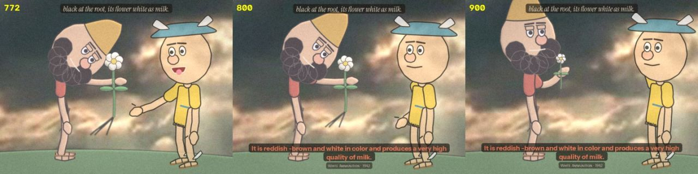
scene test The scene rendered on its own before the episode was assembled, to check staging, scale and the line.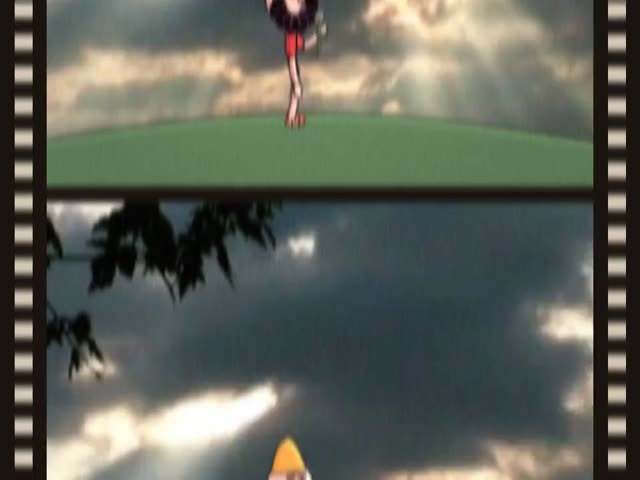
3:20 check frame from this scene- Part
- II · moly
- Sign
- Rs 26, Restrained dream
- The line
- "black at the root, its flower white as milk."
- The gesture
- Hermes flickers like a projection that has not settled. The herb is the only solid thing in the scene. Odysseus's open hand comes up under it and closes.
- Part
- III · Circe's hall
- Sign
- Ic 4, Icon
- The line
- "You are Odysseus."
- The gesture
- The dream colour swims while the cup and wand are working. When the moly holds, the colour drains to plain film. On the line, she blinks slowly and the wand drops out of her hand to the floor. At the end, while the men go to him, she turns away and puts her wrist to her eye.
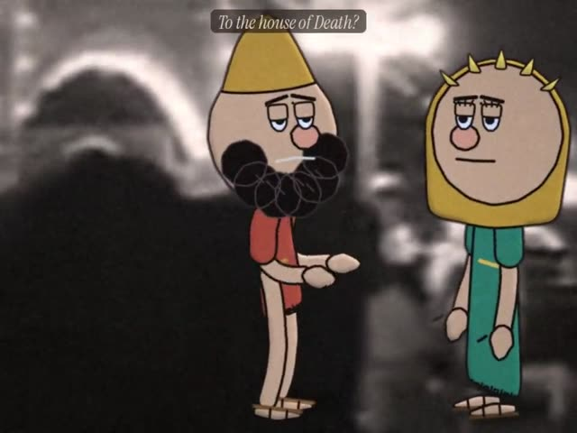
4:54 “To the house of Death?”
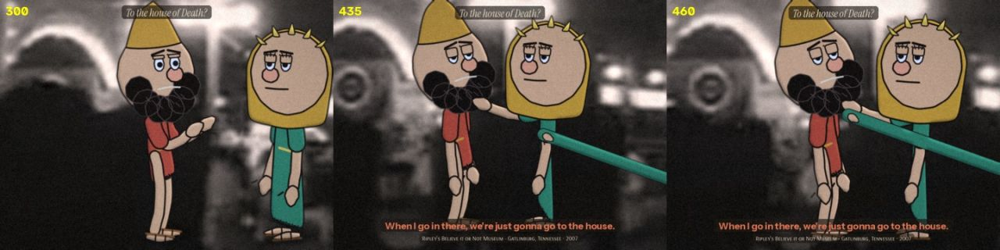
scene test The scene rendered on its own before the episode was assembled, to check staging, scale and the line.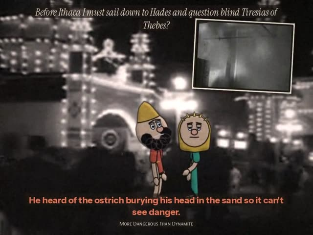
5:10 check frame from this scene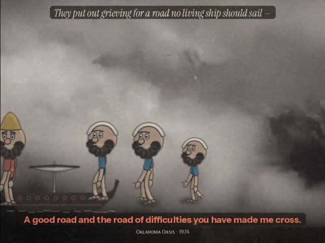
5:30 check frame from this scene- Part
- The road
- The line
- "To the house of Death?"
- The gesture
- The hands he raised to ask come down, and she crosses the room to put her hand on his shoulder. At dawn the crew walk to the ship. Elpenor is never seen: a sandal drops into the frame and lies on the sand while the others walk past it.
- Part
- After the credits
- The gesture
- One green thread from her loom comes in from the edge of the frame, finds the mast and draws taut, and the ship goes.

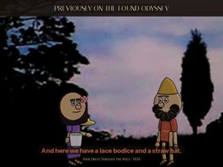
check frame Check frame 4
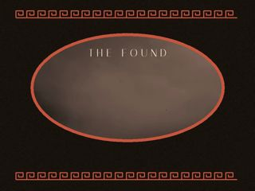
check frame Check frame 75
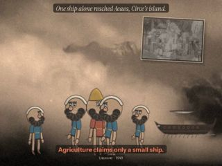
check frame Check frame 90
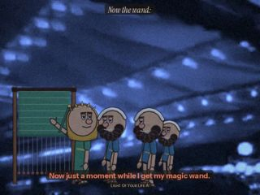
check frame Check frame 115Blending and sound
This part is about the sound. Watch with it on.
Blending. Drawn figures are matched to the film before they are composited:
- their colour statistics are pulled toward the plate's;
- they are softened to the plate's sharpness;
- they carry the plate's grain;
- their edges pick up light from the plate;
- they get a contact shadow under the feet.
Then one film finish runs over the whole frame: gate weave, halation, lifted blacks and grain. The cold open stays in the black-figure pot style.
Sound.
- Each act has its own score, built from the series' lyre motif (pluck, drone and frame drum, in a different mode per act).
- The score is ducked under the voices.
- Each place has its own room sound: open air, the hall, the dream.
- The small sounds belong to the gestures: rope on a post, roots out of the earth, a hand closing, a wand hitting the floor twice, a sandal on sand.
Observed and generated
This part separates what came from the archive from what was made here.
- Every spoken line comes from the Found Odyssey CALL tracks for Book 10. The words and their order are unchanged; only the selection and the pauses were chosen (
ody/ep4/cut.py). - The answers are The Found Odyssey's matches. When an answer's own film is in the library, it plays in an inset. The exception is the answer after each line, which plays as a caption so the close-up holds.
- The plates are from the cineosis-lab library: Bryce Canyon (pot-graded), The River (1937), Coney Island at Night (1940) and Sunburst (2007).
- Generated: all drawing and animation, the grades, the score and the sound effects.
Files
The code, if you want to open it.
- Craft layer (blending, the line, scoring):
ody/ep4/craft.py. - Scenes:
ody/ep4/s_*.py. - Title, cards, credits and assembly:
ody/ep4/furn4.py. - Rig worlds:
crash/m_e4*.js.